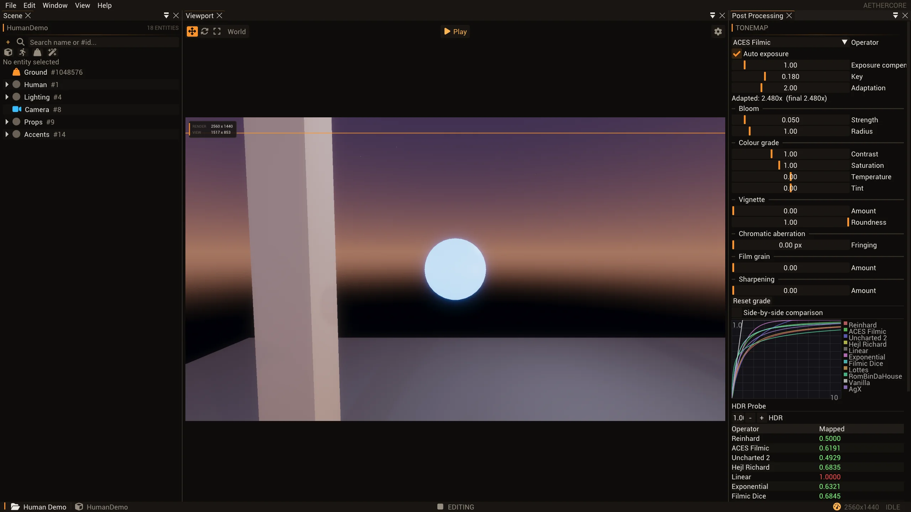
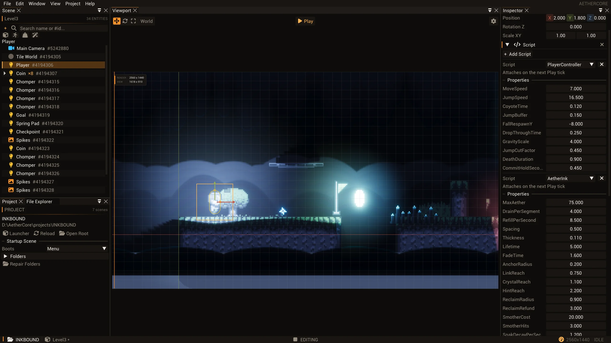
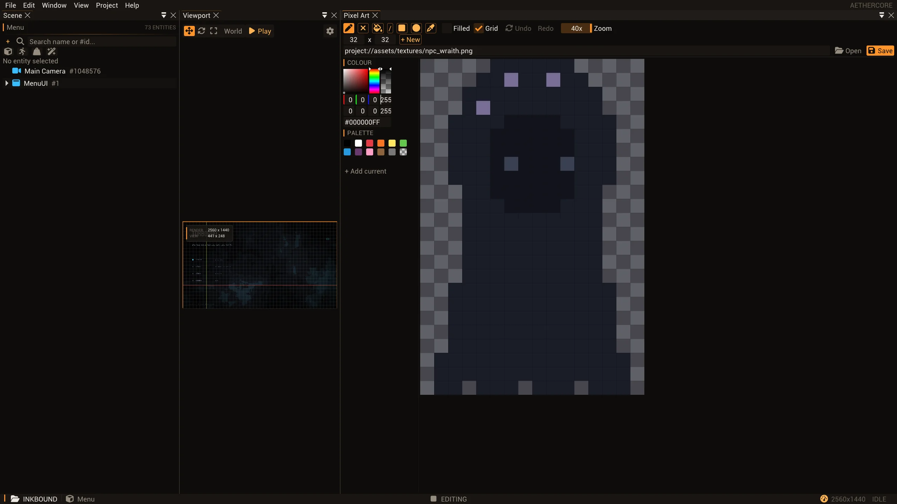

A game engine
for desktop and web.
Build 2D and 3D games with C# or Rust,
using the same editor and project.
What’s in the engine.
From the renderer to the tools around it. Explore the systems, their capabilities and where desktop and browser support differ.
Graphics & rendering
Vulkan, WebGPU, lighting & post-processing
- Desktop and browser renderersNative Vulkan and WebAssembly/WebGPU exports, fed by the engine’s frame extraction.
- GPU-driven renderingDraw culling, bindless resources, tiled lighting and an explicit render graph.
- Lighting and shadowsDirectional, point and spot lights; directional and local shadows, contact shadows and day/night lighting.
- Depth and atmosphereGTAO ambient occlusion, screen-space reflections, physical sky, clouds, height fog and volumetrics.
- Post-processingBloom, depth of field, motion blur, exposure, tonemapping, colour grading, vignette, film grain, FXAA and sharpening.
- Grass and particlesInstanced grass with density masks, LOD, wind and interaction benders; seeded 2D/3D billboard particles.
WebGPU support is profile-based, not a promise that every native effect or setting combination exports unchanged.
Rendering coverage ↗Materials & shaders
PBR, material graphs & custom passes
- Metallic/roughness PBRAlbedo, normal, metallic/roughness, occlusion and emissive textures, with runtime material controls.
- Material authoringReusable presets and node-based material graphs with a live preview.
- Surface controlsDouble-sided rendering, alpha masking, blending, additive materials, vertex colours and UV scrolling.
- Specialised surfacesWater, foliage wind, character shading, sheen, gem, plasma and molten material effects.
- Custom render passesFullscreen passes behind the scene, over the scene or contributing emissive light.
- Portable shader cookingMaterial graphs and explicit Web adapters compile into the supported WebGPU 3D shader contract.
Arbitrary native Slang and SPIR-V are not automatically portable. The 2D browser profile rejects custom shaders.
Material contract ↗2D worlds
Sprites, tilemaps, lighting & authoring
- A dedicated 2D workspaceOrthographic views, XY manipulation, sprite placement and picking in the same project workflow as 3D.
- Sprite sheets and atlasesNon-destructive slicing, pivots, pixels-per-unit and sprite identities preserved across compatible re-slices.
- Sprite renderingSorting layers, tint, flipping and alpha, additive, multiply or opaque blending.
- Tilemap authoringTilesets, palette painting and filling, chunked maps and tile collision, including one-way platforms.
- 2D lighting and backgroundsLights and occluders, parallax backgrounds and particles alongside the sprite/tile renderer.
- Sprite animationFrame timelines, loop/once/ping-pong/hold playback, speed controls and named frame events.
The 2D WebGPU profile supports sprites, tilemaps and Box2D; it is separate from the 3D export profile.
2D workflow ↗Animation & cameras
Skeletal clips, blending & camera control
- Skeletal animationImported skeletons and clips, GPU skinning, clip selection by name or index, playback speed and time controls.
- Blending and layersCross-fades, layered partial clips and joint offsets for combining and adjusting poses.
- External clipsLoad animation clips at runtime and optionally lock their root translation.
- Camera typesPerspective, orthographic, free and orbit cameras with script-controlled projection and framing.
- Gameplay framingMain-camera selection, follow targets, orbit distance, yaw/pitch and screen/world coordinate conversion.
- Lens controlsCamera focus distance, focal length and aperture feed depth-of-field rendering.
Root-motion extraction is not implemented: character movement comes from gameplay code. The public camera API selects one active main camera.
Gameplay SDK ↗Physics
Jolt 3D, Box2D, characters & ragdolls
- 3D rigid bodiesJolt static, kinematic and dynamic bodies; box, sphere, capsule, cylinder, convex-hull and static-mesh colliders.
- 2D rigid bodiesBox2D boxes, circles, capsules and convex polygons, with tilemap collision and one-way platforms.
- Simulation controlsForces, impulses, velocities, gravity, damping, friction, restitution, sleeping and continuous collision.
- Joints and constraints3D fixed, point, hinge, distance, slider and swing-twist joints; 2D distance, revolute, prismatic and weld joints.
- Characters and ragdollsCapsule character controllers with slopes, steps, ground snapping and jumping; ragdolls for recognised humanoid skeletons.
- Queries and eventsRaycasts, shape casts, overlaps and collision/trigger events for gameplay interactions.
Both physics dimensions have supported browser paths. Mesh colliders are static-only; ragdoll conversion requires supported skeleton naming.
Gameplay services ↗Audio
Spatial sound, music streaming & mixing
- Native audio playbackWAV, MP3, FLAC and Ogg-Vorbis through the virtual filesystem and packaged project content.
- 3D spatial soundDistance attenuation, panning, directional cones and Doppler, with camera-driven listener position and velocity.
- Mixing busesSeparate Music, SFX and Ambience gains, plus master volume and mute.
- Streamed musicMusic streaming and crossfades, separate from the native 64-voice one-shot pool.
- Authored audio sourcesClip, pitch, volume, looping, play-on-start, spatial distance and bus settings in the Inspector and scripting API.
- Browser audioPackaged WAV playback through Web Audio, started or resumed by a visitor gesture.
The browser audio path is distinct from native mixing: up to 32 voices, with bounded decoded clip size and duration.
Audio system ↗Networking
Native multiplayer, replication & RPCs
- Host and joinNative multiplayer sessions, LAN discovery and multiplayer project templates through the C# workflow.
- Connection traversalRouter port mapping, STUN-assisted hole punching, optional rendezvous signalling and explicitly configured TURN relay.
- Replicated stateOwner-written replicated script fields and host-controlled entity ownership transfers.
- Remote procedure callsServer, client and multicast RPC directions, with receive-side direction and ownership checks.
- Remote movementBuffered transform interpolation, bounded extrapolation and smoothed corrections.
- Lag compensationOpt-in host-side rewind for hit validation, with a bounded history window.
Native C# only—not browser multiplayer or Rust networking parity. Simulation is client-authoritative with host validation; there is no host migration. Optional relay infrastructure is separate from static hosting.
Multiplayer model ↗UI & input
Authored HUDs, widgets & controller navigation
- Entity-based canvasesUI lives in scenes and prefabs, with anchors, pivots and offsets for responsive layouts.
- Text and imagesBaked fonts, wrapping, alignment, coloured panels, textures, rounded corners and pixel-art sampling.
- Interactive widgetsButtons, sliders, toggles, progress bars and single-line text boxes with script-readable values.
- Focus and navigationMouse, keyboard and gamepad navigation with explicit UI focus ownership and activation events.
- Clipping and scrollingNested rectangular clipping and content offsets for scrollable UI.
- Gameplay inputKeyboard, pointer and gamepad input, plus screen/world conversion for world markers and interactive HUDs.
Game UI is separate from the native editor’s ImGui panels. Browser exports include supported widgets and cooked fonts.
UI API ↗Scripting
C#, Rust & shared gameplay services
- C# gameplayEntity scripts, lifecycle callbacks, Inspector-exposed fields and native engine API access.
- Rust gameplayA safe gameplay crate with checked handles, native modules and statically linked Web builds.
- Shared engine systemsEntities, transforms, components, physics, animation, cameras, audio, UI and prefab/scene operations.
- IterationCompiler diagnostics before Play, C# assembly replacement outside Play and Rust rebuild/relaunch.
- DebuggingVisual Studio C# debugger attachment and native interop for deeper engine integration.
- PersistenceGameplay save services, including asynchronous browser storage for supported exports.
The two SDKs are not identical. Reload does not migrate arbitrary live state, and browser APIs are a supported subset.
Scripting targets ↗Editor & assets
Scenes, prefabs, import & project workflows
- Project workspacesA standalone Launcher, project templates and a dedicated dockable Editor for each project.
- Scene authoringHierarchy, viewport, component Inspector, asset browser, UI canvas tools and theme editing.
- Linked prefabsInstantiate reusable entity hierarchies, edit overrides, apply/revert changes or unpack instances.
- Asset processingglTF import, mesh/skeleton/animation processing, texture transcoding and cooked asset packages.
- Reflected componentsThe same component definitions drive Inspector editing, scene serialization and agent component operations.
- Project-owned contentScenes, scripts, prefabs and assets stay with the project; unsaved-scene recovery copies can be explicitly restored.
Asset identities are source-derived, not a promise of rename-stable GUIDs or automatic streaming.
Editor workflow ↗Agents & diagnostics
MCP authoring, automation & visual inspection
- Live editor MCPInspect and create entities, edit components and transforms, manage scenes/prefabs and control Play.
- Agent asset toolsModel import, sprite-sheet slicing, animation creation, tile painting/filling and pixel-art canvas operations.
- Offline project jobsCreate, inspect, build, test, run and publish projects without an open editor, with structured job reports.
- Bounded gameplay automationKeyboard, pointer and gamepad sequences; pause, step, resume and simulation-speed controls.
- Visual inspectionViewport screenshots, render-graph inspection, registered texture/depth/HDR captures and render-memory diagnostics.
- Profiling and debuggingTracy CPU/GPU/memory instrumentation, validation logs and a Visual Studio debugger MCP workflow.
Agents use explicit editor commands and owned sessions. Cursor-lock behaviours still require a focused window; a successful command is not visual proof.
Agent tool reference ↗Build & publish
Native packages, browser players & verification
- Native game packagesCooked project assets, compiled gameplay and startup settings in a redistributable runtime folder.
- Build configurationsDebug, Dev, Ship and Retail tiers, with development diagnostics separated from release builds.
- WebGPU exportsSelf-contained 2D and 3D players with WebAssembly, cooked assets and C# or Rust gameplay.
- Static hostingServe the player from HTTPS hosting such as GitHub Pages. The visitor’s device runs the game.
- Package verificationSize/hash manifests and extracted-package checks, away from the source project and its local files.
- Explicit export boundariesUnsupported content produces diagnostics rather than silent omissions; a failed publish preserves the previous valid export.
A static host is not a multiplayer server. WebGPU requires a compatible browser and GPU; export profiles define the supported content.
Publishing guide ↗From inside the engine.

A frame is not the world.
Why the renderer receives an extracted packet, what stays alive around it, and why CPU completion is not GPU completion.
Read the engineering note ↗
What survives a C# reload?
A shared SDK identity, collectible assemblies and cached properties. Replacing code is not the same as preserving live state.
Read the engineering note ↗
Commands, not coordinates.
How MCP reaches the live editor, why mutations run on its main thread, and why a successful command still needs visual proof.
Read the engineering note ↗